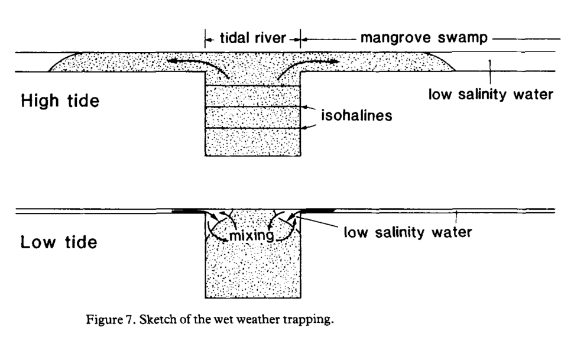

5.3 Sedimentation and hydrology
5.3.1 Wolanski, 1986
“Tidal mixing and trapping in mangrove swamps” (E. Wolanski and Ridd 1986)
Key contribution: This study primarily seeks to answer two key questions:
- What parameters control export of salt left after evapotranspiration of tidal waters by mangrove trees?
- How do rivers influence the growth of mangroves?
There is a lot of mathematical hydrological modeling that is over my head in this study, but there are some relevant ecological points that are worth noting.
Key results: Some key results from the study include:
- The “trapping mechanism” is the dominant parameter controlling “longitudinal dispersion” in their study swamp. They conclude that it is likely the dominant mechanism in many swamps in the absence of large buoyancy effects (i.e., dry seasons)
- Buoyancy effects are important due to trapping of freshwater in the swamp at high tide and boundary layer that enters the river banks at low tide
- Residence time of runoff in mangrove swamps may be quite long with important ecological implications, such as nutrient uptake and settling of fine sediments
A diagram of the “trapping mechanism” of fresh water in the landward portion of swamps is shown below:

Further reading: This study led to some questions that may be important for understanding soil formation in mangroves. In particular:
- What is the “trapping mechanism” in estuarine hydrodynamics?
- What are the specific processes of tidal mixing and what is the broader relevance for the ecology of mangroves?
- What is longitudinal dispersion in relation to mangroves?
- What are the specific implications of buoyancy effects, and how do they vary between dry and wet seasons?
5.3.2 Wolanski et al, 1992
“Mangrove hydrodynamics” (In Robertson and Alongi, 1992) (E. Wolanski, Mazda, and Ridd 1993)
Key contribution: This is a comprehensive review of hydrodynamics in mangroves, that comes from the Robertson and Alongi book.
Key notes:
Of the 5 (6) different Lugo and Snedaker geomorphic setting classifications, hydrodynamics in the riverine forest type has been studied the most extensively.
Tidal circulation - Tidal circulation is often the dominant cause of water movement.
Ebb tides are shorter than flood tides, but have slightly stronger water flows.
Water movements within tidal creeks are frequently greater than 1 m/s, however water flows within the forest itself are rarely greater than 0.1 m/s.
Mathematical models of hydrodynamics in mangroves have largely focused on two components:
- Tidal creeks - where acceleration, sea level gradients, friction and inertia are all important
- Forest flood - where inertial effects can largely be neglected
Tidal assymetry - Currents in tidal creeks are strong during ebb flow relative to flood flow.
The key to understanding this is that friction within the bed of the creek as well as the forest floor produces a time lag between the time of high tide at the head of the creek, versus the time of high tide at the mouth of the creek. The higher water level at the head of the creek accelerates flows back towards the mouth of the estuary.
The stronger ebb flow relative to the flood flow is important in maintaining channels and also export of suspended matter from the mangrove; reductions in forest extent will impact ebb flow as the difference in water height between shoreward and landward zones is a function of the distance and is greatly reduced.
The creek will then silt rapidly until balance is reachieved in which scouring action can reoccur.
Exchange with the nearshore zone - The presence of salinity within any given location in the forest and the intermixing of coastal, tidal and freshwater flows depends on the tide, season and relative amount of each within the system.
Bounds between freshwater and saline water may exist in the uppertidal reaches following a flushing of the estuary by freshwater (e.g., heavy rain event and low tide), which is produced by influx of high tide and limited mixing with the freshwater. May take several weeks for freshwater to be flushed from the system.
Transverse circulation - Secondary circulation phenomena exist due to primary tidal circulation and net downstream transport of freshwater.
Longitudinal circulation - caused by saltwater inflow at creek bottom and freshwater flow at surface from density effects.
Transverse flows produce linear aggregations of leaf litter and propagules and, though understudied, are likely formed through similar processes as linear oceanographic features near coral reefs.
Tidal currents and sediment fluxes - At the time of this article, there were key knowledge gaps in reference to tidal currents and sediment fluxes. See the Fukukara pieces for more precise information on sedimentation rates within the forest (Sections 5.3.3 and 5.3.4).
In general, flow rates are not sufficient to reentrain sediment in the water column, particularly during flood tides. This provides support of the importance of ebb flows in scouring process for maintaining channel depths.
Groundwater flow - Flows of groundwater are important but are poorly understood. During initial flooding of forest floor, water may first be seen through bubbling out of crab holes which is an important mechanism for maintaining lower salt concentrations.
Climatic and tidal influences - Amount and periodicity of precipitation greatly influence the hydrodynamics of a given site. Balance between rainfall and evaporation, when coupled with tidal variations, is a key factor that determines salinity status of various portions of the mangrove.
A diagram of physical, biological and chemical processes as they relate to mangrove hydrology is shown below:

5.3.3 Furukawa, 1996
“Sedimentation in mangrove forests” (Keita Furukawa and Wolanski 1996)
Key significance: Furukawa and Wolanski show through an empirical study that a sediment pump from coastal waters to the mangrove interior does exist.
They find that the presence of a tidal pump is largely due to:
- High turbulence that maintains entrainment of fine sediments during flood tide.
- Settlement of flocculated sediment during slack high tide in which turbulence is reduced, and increased flocculation which results in order of magnitude increase in size.
- Insufficient ebb tide velocities to resuspend settled sediment (of now larger size).
Key notes:
Water velocity of tidal flooding in a mangrove forest can be described as:
\[ u = 1/n\ *\ h^{2/3}\ *\ I^{1/2} \]
Where:
- u: water velocity
- n: Mannings friction coefficient
- h: water depth
- I: water surface slope
Typical values for the Mannings friction coefficient for sandy channels are in the range of 0.025-0.035, whereas empirical studies by Wolanski have found values as high as 0.2 - 0.4 for areas with mangrove vegetation. Thus, mangrove vegetation increases the Mannings friction coefficient by several orders of magnitude.
This results in a failure to resuspend fine sediments that are deposited during slack high tide and thus promotes build-up of sediment.
Consideration of floc size is important for sedimentation studies within mangroves. In calculating the settling velocity (via Stoke’s law) for both individual particles of clay and silt, as well as that of mean floc size measured within the tidal water, settlement of flocs was found to be approximately 100 times larger than for individual particles (0.005 m/s).
Empirical measurements in the field showed that for tree species with complex matrices of aboveground roots, turbulence was intense enough to maintain flocs in suspension. For single stemmed trees without root systems (e.g., Bruguiera or Ceriops), both turbulence and flow velocity are reduced.
5.3.4 Furukawa, 1997
“Currents and sediment transport in mangrove forests” (K Furukawa, Wolanski, and Mueller 1997)
Key contribution: A sister study to (Keita Furukawa and Wolanski 1996), this study describes the empirical data collected to investigate current flows and suspended sediment characteristics of a mangrove in Australia.
Research design: Water level, currents, sedimentation (via sediment traps and Analite nephelometers (upward looking cameras)), suspended sediment levels (via water samples), and concentration of flocs (via microscopic slides with wells) were measured along a transect in the forest, at varying distances from a tidal creek.
The data were compared against three hydrological models to investigate the accuracy of mathematical modelling of hydrodynamics and sedimentation in mangroves, as well as analyze the empirical data for the site. The models were:
- 2DSWAMP - flow model based on primitive equations of motion
- LAKE - a lake model that assumes flat water surface and determines flow rate
- VORTEX - a discrete vortex model that provides information on turbulence
Key findings:
The LAKE model performed poorly and was not used within in the subsequent analyses (unrealistic assumption that the surface water is flat).
Suspended sediment concentration showed strong asymmetry in that concentration was higher at flood tibe and much lower at ebb tide. This is indicative of net inwelling of sediment into the mangrove.
Sedimentation rates decreased with distance from the tidal creek. In calculating the sedimentation velocity, the median floc size (90 micrometers) was approximately 4 times that of size of solid minerals (24 micrometers) given high porosity of flocs. Visual investigation of suspended sediment reveals that much of the flocs had settled out of the water column following slack high tide.
Vegetation greatly increased turbulence and created a complex set of hydrological effects (eddies, stagnant regions, and jets).
DOC was found to vary inversely with tidal depth, with the lowest DOC concentration present during slack high tide. Furthermore DOC in the forest was found to be greater than coastal waters, indicating that both creek and mangrove waters are significant sources of DOC.
The findings suggest a net inwelling of DOC in the forest (greater DOC concentration during flood tide than ebb tide), but this does not corroborate with other analyses.
5.3.5 Krauss et al, 2003
“Differential rates of vertical accretion and elevation change among aerial root types in Micronesian mangrove forests” (Krauss, Allen, and Cahoon 2003)
Key contribution: Understanding of sedimentation and hydrology in mangroves has largely been theoretical and model based, and thus this study represents one of the only studies to investigate the differential effects of different root morphologies on sedimentation in mangroves empirically.
Study design: Rates of sediment accretion and elevation change for three different root types were examined in three different river basins in the Federated States of Micronesia. Experimental plots of 25 m in radius were established within the fringe, riverine and interior sections of each of the river basins, and three 1 m2 plots were established in the plots in each of the three root types (Rhizophora prop; Avicennia pneumatophore; and Bruguiera knee) as well as a control.
Marker horizons (50% feldspar clay, 50% sand) were laid and 5 100 cm pins were inserted 70 cms into the soil to estimate sediment accretion and surface elevation changes, respectively. Additionally, root basal areas were calculated at a height of 4 cm for comparison of root biomass to sedimentation characteristics. Fine root fraction estimates were taken via soil cores and washing of mineral soil and particulate OC to achieve just the fine root fraction, which was compared with surface elevation data.
Key results: The results provided several key findings:
- The results showed that Rhizophora roots had significantly higher rates of sediment accretion relative to the others.
- The authors attribute it to increased turbulence and thus flocculation of suspended sediment, reduction in flow which traps it within the root complex, and thus higher rates of sediment accretion during slack flows
- No significant differences among functional root types for elevation change were found across all basins, but root type x river basin interactions were found to be significant (control plots or pneumatophores having higher rates of positive sediment surface elevation change).
- Elevation chane rates were found to occur through series of “pulses” rather than steady through time
- Lower rate of surface elevation change in Rhizophora was suggested to potentially having to do with the lower ratio of lignin:Nitrogen in the fine root fraction, which may have been more decomposible and thus result in elevation decreases.
- Root area and root density did not have significant influence on monthly rates of vertical accretion.
Furthermore, found that surface elevation change in Avicennia pneumatophores was highest, and the authors conclude that organic matter contribution is thus significant – might have implications for research questions.
5.3.6 Adame et al, 2010
“Sedimentation within and among mangrove forests along a gradient of geomorphological settings” (Adame et al. 2010)
Key contribution: This is one of the few studies that empirically tests for differences in sedimentation rates amongst different geomorphological settings and different forest types (fringe vs. scrub vs. algal mats) within the different geomorphological settings.
Study design: The study primarily employs petri dishes held to the forest floor as well as water samples to example differences in total suspended sediment, sediment accretion and the presence of glomalin (a secretion produced by terrestrial arbuscular mycorrhizal fungi) across forest types/settings.
Glomalin was used as an indicator of terrestrially versus other derived sediments, as AMF largely do not exist in mangroves and thus this would be indicative of terrestrially derived sediments.
Replicates plots in the fringe, scrub, and upper-tidal (algal mats) portions of six different sites, which were a variation of river-dominated vs. tide-dominated geomorphological settings, were established. Samples from the water column and sediment deposition on petri dishes were taken to investigate variation in deposition patterns.
Interestingly, the study also used PCA of several environmental variables to establish a quantitative measure of the geomorphic setting. Among the environmental variables included were:
- Salinity
- Catchment area (km2) - unsure specifically what this is
- DIstance to sea (km) - unsure as to how this measure was taken
- Entrance section area (m2) - unsure as to what this is
Key results: Their results found that sedimentation patterns varied between geomorphic types, as well as environmental settings within the river-dominated vs. tide-dominated settings.
Export of total suspended sediment:
No relationship between sediment retention and geomorphological setting was found. For those sites that did show retention of total suspended sediment (TSS), retention was found during the ebb tide in the fringe and scrub zones.
Sedimentation:
The fringe zone was found to have the highest sedimentation rates, which the authors attribute to the greater density of vegetation (and thus AG root complexes? though they do not specify tree species).
A relationship between sedimentation rate and geomorphological setting was not found.
In general, sedimentation was evenly distributed in riverine dominated geomorphological settings, whereas tidal mangroves found majority of sedimentation to occur in the fringe zone.
Glomalin:
The amount of glomalin was correlated to its age (determined via immunoreactivity), and riverine sites were found to have much higher and younger amounts of glomalin than tidal sites in the TSS.
In the deposited sediments, glomalin did not correlate with geomorphological setting, but did exhibit differences between intertidal zones within riverine and tidal settings. The majority of glomalin deposited in riverine settings occurred in the scrub zone, whereas the majority in tidal settings occured in the fringe zone.
5.3.7 Lovelock et al, 2010
“Mangrove forest and soil development on a rapidly accreting shore in New Zealand” (Lovelock et al. 2010)
Key contribution: This study examines the development of forest structure and soil conditions in two naturally established mangrove forests in New Zealand. The study is interesting in that it provides an interesting description of naturally establishing and developing forests in potentially newly available sites (i.e., at the ends of their range).
Key notes:
The article opens with an excellent review of succession and forest development in mangroves, for which the literature is relatively limited. Of particular note is that most field studies have focused purely on forest structure (i.e., stem density and basal area) rather than biogeochemical properties through time.
Methods
The study uses a chronosequence of two mangrove forests to examine development over time and test the following hypotheses:
- Mangroves are youngest on seaward fringe and oldest on landward edge
- Mangroves follow successional patterns described in Odum 1969
- C stocks in soils increase with age
- Soil respiration varies with forest age, declining with forest productivity
- N limitations on growth increases with forest age, similar to terrestrial forest systems
The site they use is at the mouth of the Thames river, and is in a macrotidal site that has large supply of fine-sediment that is redoposited along the coast in intertidal-mud flats.
Transects were laid across the intertidal (~1 km) and forest structure, soil samples (nutrients, C, redox and soil respiration), and tree cores were taken for bomb pulse radiocarbon dating.
Additionally, nutrient addition experiments were performed in the youngest section of the fringe forest and the tallest and oldest forest. Trees were fertilized directly with N and P, and growth was assessed over 14 months.
They compared the young (fringe) forest to the older (landward) forest to examine several successional criteria:
- Community energetics - gross production assumed to scale linearly with LAI, and thus production/biomass can be estimated as LAI/basal area
- Community structure - Several different metrics were used here:
- total organic matter - soil carbon and aboveground biomass
- ratio of porewater nutrients to total foliar nutrients
- biochemical diversity estimated as CV in soil redox potentials
- spatial heterogeneity as CV in tree size
- Selective pressure - quality and quantity of production assessed by leaf production, leaf nutrient concentrations, and specific leaf area
- Overall homeostasis - nutrient conservation as foliar nutrient resorption efficiency
Results
LAI was variable along the transect whereas other forest structure parameters (height, density and BA) were variable, but not in a linear manner or one that corresponded to distance from shore.
Within the fringe, they found trees with markedly different heights but were likely recruited at approximately the same time, indicating that they had differing rates of growth.
The radiocarbon dating indicated two different periods of broad establishment, with variation in forest structure in each of the recruitment classes.
Soil C and N increased strongly from the seaward to the landward edge. Soil C ranged from 2% at the fringe to 6% at the landward section, but then decreased sharply at the landward edge.
Leaf nutrient concentrations were highest at the fringe, and N resorption was lower whereas P resorption was higher.
Addition of N fertilizer significantly increased stem extension rates in young and old forest, whereas fertilization with P did not have significant effects.
Assessing succession showed that differences between the young and old forests tended to adhere to successional model predictions:
- Community energetics - found to be higher in young forests for LAI per BA, but soil respiration per BA was not different
- Community structure - soil C and biomass were lower in the younger forest; tree size was more variable; CV of soil redox potential was higher in younger
- Selective pressure - leaf nutrient concentrations not significantly different, but younger forest had higher growth rates
- Overall homeostasis - nutrient conservation did not differ between forests.
Discussion
They expected to find higher density and lower BA forests at the fringe, but found variable structures across both forest ages. Additionally, found two major pulses of establishment to exist.
The authors suggest a strong time component in which forest growth is pulsed and may be dependent upon favorable climatic conditions. The two periods they identify coincide with sustained El Nino activity. Given the orientation of the site, El Nino conditions would reduce wave energy and thus may favor seedling recruitment.
Patterns of forest structure seen at other sites and stylized by Jimenez and Lugo (1985) did not correspond to those seen at the site. Tree density did not differ between seaward and landward edges, although height and basal area increased from younger to older forest.
Characteristics of mature forests are believed to occur around 15 years, and persist until senescence at 55 years. The forests studied here corroborated with that, with the 30 year old forests showing mature forest traits.
Their results gave evidence that mangroves display characteristics consistent with models of succession:
- Dissolved organic N and N:P ratios in porewater decreased towards landward edge
- Total accumulation of soil C, N and P increased towards landward edge.
Placeholder
Wolanski, Eric, and Peter Ridd. 1986. “Tidal Mixing and Trapping in Mangrove Swamps.” Estuarine, Coastal and Shelf Science 23 (6): 759–71. doi:10.1016/0272-7714(86)90073-9.
Wolanski, Eric, Yoshiro Mazda, and Peter Ridd. 1993. “Mangrove Hydrodynamics.” In Tropical Mangrove Ecosystems, edited by Roberston A.I. and D.M. Alongi, 43–62. Wiley Online Library. doi:10.1029/CE041p0043.
Furukawa, Keita, and Eric Wolanski. 1996. “Sedimentation in Mangrove Forests.” Mangroves and Salt Marshes 1 (1): 3–10.
Furukawa, K, E Wolanski, and H Mueller. 1997. “Currents and Sediment Transport in Mangrove Forests.” Estuarine, Coastal and Shelf Science 44 (3): 301–10. doi:10.1006/ecss.1996.0120.
Krauss, KW, JA Allen, and DR Cahoon. 2003. “Differential Rates of Vertical Accretion and Elevation Change Among Aerial Root Types in Micronesian Mangrove Forests.” Estuarine, Coastal and Shelf Science 56 (2): 251–59. doi:10.1016/S0272-7714(02)00184-1.
Adame, María Fernanda, David Neil, Sara F Wright, and Catherine E Lovelock. 2010. “Sedimentation Within and Among Mangrove Forests Along a Gradient of Geomorphological Settings.” Estuarine, Coastal and Shelf Science 86 (1): 21–30. doi:10.1016/j.ecss.2009.10.013.
Lovelock, Catherine E, Brian K Sorrell, Nicole Hancock, Quan Hua, and Andrew Swales. 2010. “Mangrove Forest and Soil Development on a Rapidly Accreting Shore in New Zealand.” Ecosystems 13 (3): 437–51. doi:10.1007/s10021-010-9329-2.